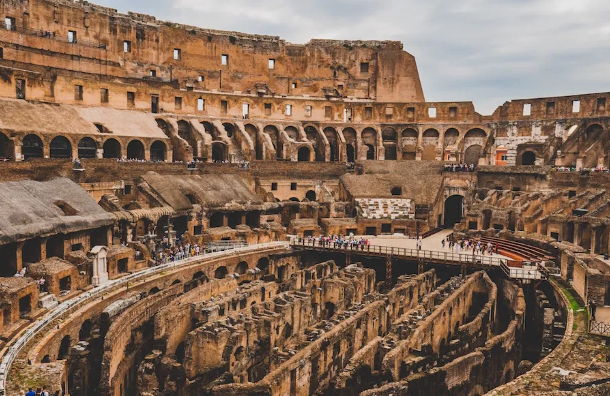

Fue construida alrededor del año 220 a.C. por el primer emperador Qin Shin Huang, quien ordenó reunir los tramos de fortificaciones construidas anteriormente, a fin de crear un sistema de defensa contra las invasiones de los pueblos del Norte, revela la Organización de las Naciones Unidas para la Educación, la Ciencia y la Cultura (Unesco, por sus siglas en inglés).
Chichén Itzá es una ciudad maya de la península de Yucatán (México) que floreció en los siglos IX y X. De acuerdo con Unesco, esta ciudad sagrada fue uno de los centros más importantes de la civilización maya. Entre los edificios que han sobrevivido al paso del tiempo figuran el Templo de los Guerreros, el Castillo y el observatorio circular conocido por el nombre de El Caracol. Por su relevancia, también se encuentra en la lista del patrimonio desde 1988.
La antigua y extraordinaria ciudad de Petra, en Jordania, es única, porque está esculpida en piedra arenisca. Las características y peculiaridades de esta piedra han permitido, de hecho, la construcción de un sistema de canalizaciones y cisternas muy complejo que aseguraba el abastecimiento de agua.
Machu Picchu es el sitio arqueológico inca más sobresaliente debido a su creativo diseño urbano, la belleza de su arquitectura y el fino trabajo en piedra de sus construcciones. En su planificación se aprovechó notablemente la topografía de la cima de la montaña a la que transformó en una imponente llaqta.
El Cristo Redentor es una obra cuya significación se relaciona con el imaginario religioso de Brasil. Para este país, fuertemente influenciado por el catolicismo, Cristo se representa como símbolo de redención, símbolo de perdón y símbolo de protección.
El Coliseo se convirtió en el mayor anfiteatro romano, con una estructura elíptica de 188 metros de longitud, 156 metros de ancho y 57 metros de altura. Realizado en ladrillo y cubierto con travertino se dividía en cinco niveles con una capacidad para más de 50.000 personas.
El Taj Mahal es un mausoleo construido por el emperador mogol Sha Jahan en honor a su esposa preferida, Mumtaz Mahal (la «Elegida del Palacio» o la «Joya del Palacio»), muerta al dar a luz. Taj Mahal (abreviación del nombre de Mumtaz Mahal) significa también “La Joya del Palacio”.
¿Cómo se eligieron las siete maravillas del mundo moderno?
Se denominan las nuevas siete maravillas del mundo moderno a los monumentos que resultaron los ganadores en un concurso público e internacional celebrado en 2007, inspirado en la lista de las siete maravillas del mundo antiguo y realizado por una empresa privada de nombre New Open World Corporation. Más de cien millones de votaciones, a través de Internet y SMS, dieron como resultado esta nueva clasificación. La iniciativa partió del empresario suizo Bernard Weber, fundador de la empresa.
¿Cuáles eran las 7 maravillas del mundo?
Según indica la Enciclopedia Britannica, a partir del siglo II antes de Cristo diversos observadores elaboraron un listado de siete obras arquitectónicas y escultóricas del antiguo Mediterráneo y de Oriente Próximo.
Estas eran: la Gran Pirámide de Guiza, los Jardines Colgantes de Babilonia, el Templo de Artemisa en Éfeso, la Estatua de Zeus en Olimpia, el Mausoleo de Halicarnaso, el Coloso de Rodas y el Faro de Alejandría.
Autor : Janice Karim Juárez Jimenez.